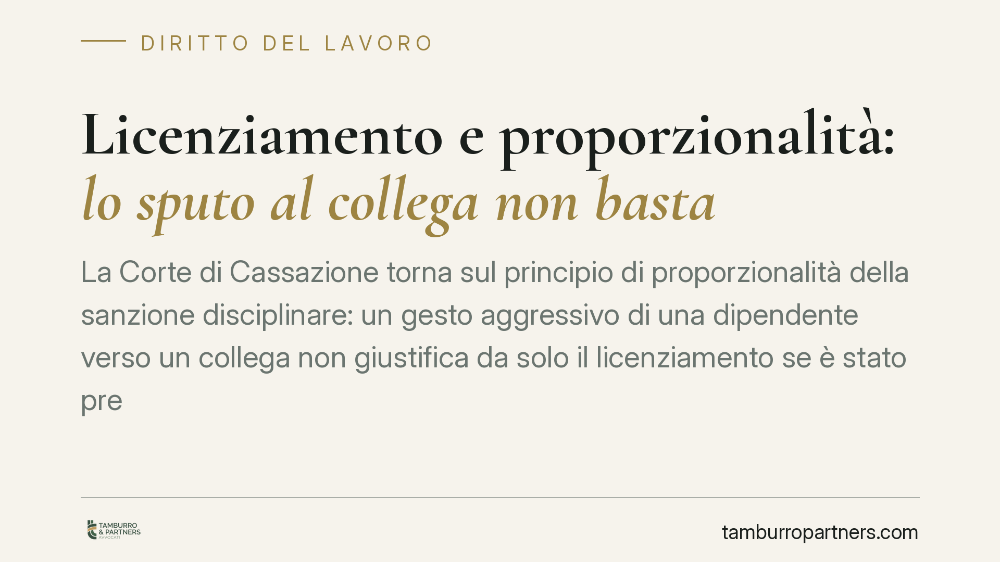

Licenziamento e proporzionalità: lo sputo al collega non basta
La Corte di Cassazione torna sul principio di proporzionalità della sanzione disciplinare: un gesto aggressivo di una dipendente verso un collega non giustifica da solo il licenziamento se è stato preceduto da condotte provocatorie della controparte. La pronuncia ricorda ai datori di lavoro che ogni recesso va calibrato sul contesto concreto, non sul fatto isolato.

Il caso
Una lavoratrice viene licenziata per giusta causa dopo avere sputato in faccia a un collega. La sanzione appare, in astratto, severa ma comprensibile: un gesto del genere aggredisce la dignità altrui e turba l'ordine aziendale.
Il quadro, però, cambia quando emerge il contesto. Il collega era l'ex compagno della dipendente e, secondo quanto accertato nei gradi di merito, autore di condotte moleste nei suoi confronti. La Corte di Cassazione ha così ritenuto illegittimo il licenziamento, valorizzando il comportamento concausale della controparte e imponendo una valutazione di proporzionalità più articolata.
*Nota sulla fonte: il riferimento all'ordinanza indicato dalla stampa divulgativa (n. 19848, anno 2026) non risulta ad oggi verificabile sul massimario della Cassazione. Riportiamo quindi il principio di diritto, consolidato e indipendente dal singolo provvedimento, rinviando al riscontro ufficiale prima di qualunque uso in sede contenziosa.*
Inquadramento normativo
Due norme reggono il ragionamento.
L'art. 2119 cod. civ. disciplina il recesso per giusta causa: il datore può licenziare senza preavviso quando si verifica un fatto che non consente la prosecuzione, nemmeno provvisoria, del rapporto. È la sanzione più grave, riservata a inadempimenti che spezzano in radice il vincolo fiduciario. Va distinta dal giustificato motivo soggettivo (art. 3, L. 604/1966), che riguarda un notevole inadempimento ma compatibile con il preavviso: una scala di gravità che il datore deve rispettare.
Il cardine della decisione è però l'art. 2106 cod. civ., che impone la proporzionalità tra infrazione e sanzione disciplinare. Non ogni condotta riprovevole giustifica il licenziamento: la sanzione va commisurata alla gravità effettiva del fatto, letto nel suo contesto. Su questo punto la giurisprudenza è costante: la giusta causa non si misura sul gesto isolato, ma sull'intera vicenda, comprese le condotte provocatorie o concausali di chi subisce il comportamento. La provocazione non cancella l'illecito, ma ne attenua il disvalore e incide sul giudizio di proporzionalità.
Rileva infine la tipizzazione collettiva delle sanzioni: i contratti collettivi graduano le infrazioni e le relative risposte disciplinari. Il datore che intende licenziare deve verificare se il fatto rientri tra quelli per cui il contratto prevede il recesso, o se imponga invece una misura conservativa.
Implicazioni pratiche
Per il datore di lavoro il messaggio è netto: la reazione disciplinare va costruita, non applicata in automatico.
Un fatto astrattamente grave può tradursi in un licenziamento illegittimo se l'istruttoria interna trascura il contesto. Nel caso esaminato, ignorare le molestie subite dalla lavoratrice ha reso sproporzionata la sanzione, con conseguente annullamento del recesso e i noti effetti ripristinatori o risarcitori.
Questo significa che il procedimento disciplinare deve accertare non solo *cosa* è accaduto, ma *perché* e *in quale situazione*. Un'indagine parziale espone l'azienda al rischio di soccombenza in giudizio e, nei casi più delicati, a profili di responsabilità per non avere tutelato la dipendente da condotte moleste di cui era, o poteva essere, a conoscenza.
Per il lavoratore, la pronuncia conferma che la provocazione documentata è un elemento difensivo concreto, da far valere già in fase di contestazione.
Cosa fare in concreto
- Istruite il procedimento disciplinare accertando l'intero contesto: antefatti, provocazioni, rapporti pregressi tra i soggetti coinvolti.
- Verificate la tipizzazione del CCNL applicabile: controllate se il fatto rientra tra quelli puniti con il licenziamento o con una sanzione conservativa.
- Graduate la risposta disciplinare secondo l'art. 2106 c.c., distinguendo tra giusta causa, giustificato motivo soggettivo e misure conservative.
- Documentate per iscritto la valutazione di proporzionalità, motivando perché la sanzione scelta è adeguata al fatto nel suo contesto.
- Intervenite tempestivamente su segnalazioni di molestie o conflitti personali tra dipendenti: ignorarle aggrava la posizione dell'azienda sotto più profili.
Consigliamo di acquisire un parere legale prima di adottare il licenziamento nei casi che presentano un contesto relazionale complesso.
Un principio consolidato, non un'eccezione
La decisione non introduce nulla di rivoluzionario: ribadisce un orientamento stabile secondo cui la proporzionalità della sanzione è il filtro attraverso cui ogni licenziamento disciplinare deve passare. Il contesto non giustifica l'illecito, ma impedisce di trasformare ogni gesto riprovevole in automatica rottura del rapporto. Chi gestisce il potere disciplinare è chiamato a esercitarlo con misura, perché è proprio la misura a renderlo legittimo.
Contributo informativo a cura di Tamburro & Partners - Avv. Giuseppe Tamburro. Non costituisce parere legale.
Ogni storia di lavoro ha i suoi tempi.
Se gestisci HR e vuoi un confronto su contenzioso, ispezioni o licenziamenti, scrivi allo studio. Ti rispondiamo entro un giorno lavorativo.